L1
Lockup, inline, light
Mark at 1.6x beside the outlined wordmark; the word sits on the mark's centre line.
Marketing kit
Every file is generated from the canonical mark, so the mark is never redrawn by hand. Take the SVG for web and print and the PNG for email and social uploads. Every PNG is at least 2× its stated size.
The file to reach for first. Codes name the asset below.
| Need | Use | Why |
|---|---|---|
| Site, app or document header | lockup-light or lockup-dark (L1, L2) | Mark and word in one file, word outlined |
| Sign-in, splash or square cover | lockup-stacked-light or -dark (L3, L4) | Fits a square or a narrow column |
| Website hero or section background | pattern-contour-light or -dark (M1) as a full-bleed SVG, badge-blue (B1) on top | Vector, scales to any width |
Link preview (og:image) | png/poster-og-contour.png (X6) or png/poster-og.png (X1) | Link unfurlers need a 1200 × 630 raster |
| Repository social preview | png/poster-github.png (X8) | GitHub wants 1280 × 640 and shows it at 2× on retina |
| Email header or signature | png/badge-lockup-light.png (B14) at 330 px wide, or png/badge-small.png (B12) at 48 px | Gmail strips SVG; every PNG is 2× or more for retina |
| Dark email or dark site section | badge-cream (B6) or badge-lockup-dark (B15) | Blue sinks on ink |
| Square social post | png/poster-contour-square.png (X6d) or png/poster-square.png (X4) | 1080 × 1080 |
| Profile banner | png/poster-contour-banner.png (X6e) or png/poster-banner.png (X5) | 1584 × 396 |
| Story | png/poster-story-contour.png (X7b) | 1080 × 1920 |
| One-colour print, stamp, invoice | badge-mono-blue (B7) or badge-mono-ink (B8) | Ring type and rays knock out to the paper |
| On brand blue | badge-ink (B2), badge-mono-white (B10) or badge-watermark (B11) | Built for a #2563eb ground |
| Under 72 px (avatar, favicon spot, chip) | badge-small (B12) or badge-small-ink (B17) | Ring type is unreadable that small |
| Sticker | badge-sticker (B13) | Cream ring is the die line |
| Merch or packaging all-over print | pattern-rope-twill (M2d), pattern-rope-blue (M2e) | Repeats edge to edge |
| Release notes | badge-release (B3) with the version text edited | Version text is live |
| Public form or shared view footer | badge-footer-light / -dark (B5) | Links back to weave |
Mark and wordmark from build-logos.mjs, the word outlined, placed as they are.
Mark at 1.6x beside the outlined wordmark; the word sits on the mark's centre line.
Same lockup on dark surfaces: sky second strand, cream word.
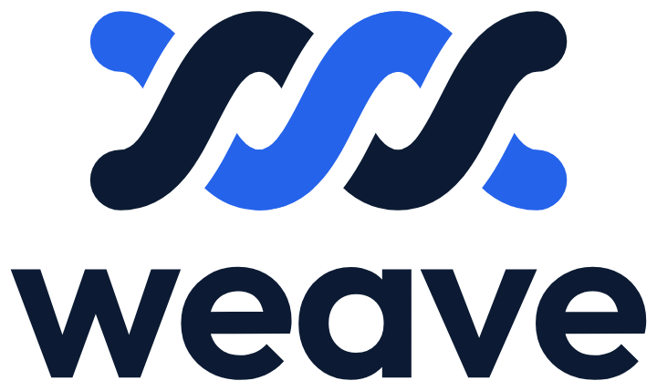
Mark 75% of the word's width, half a word height above it, both centred.
Same stacked lockup on dark surfaces.
The sawtooth seal with the mark at the centre. Each treatment belongs on the ground named under it; on the wrong ground the ring disappears.
Default. Light pages, stickers, posters on slate.
On brand blue fields and photography.
On ink or night surfaces where blue would sink.
Print and stamps. Ring type and rays are knocked out to whatever is behind.
Single-ink print: invoices, letterhead, packing slips.
Over dark photography or video.
Reversed out of brand blue: buttons, banners, merch on blue.
White at 14% for tonal backgrounds and certificate grounds.
Below 72px: no ring type, no rays, mark enlarged. Favicons, avatars, chips.
Cream bleed ring is the die line, 10px outside the teeth.
Small badge for dark avatars and app chrome.
Seal over wordmark for narrow spaces and covers.
Seal beside the wordmark for light pages and documents.
Same lockup on dark surfaces.
Link previews, social posts, banners and stories. The field is part of the file.
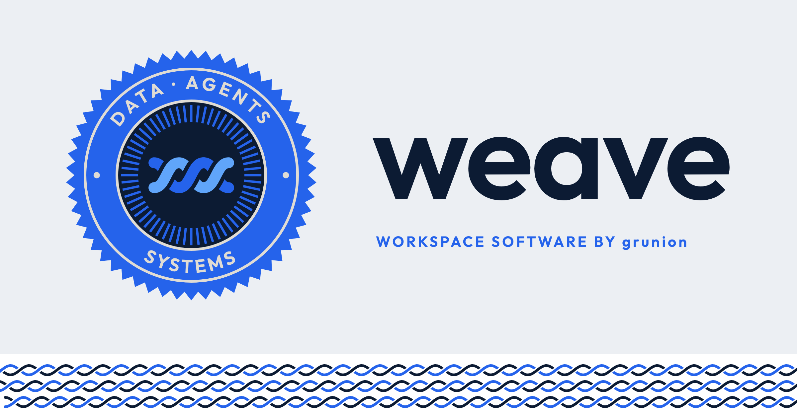
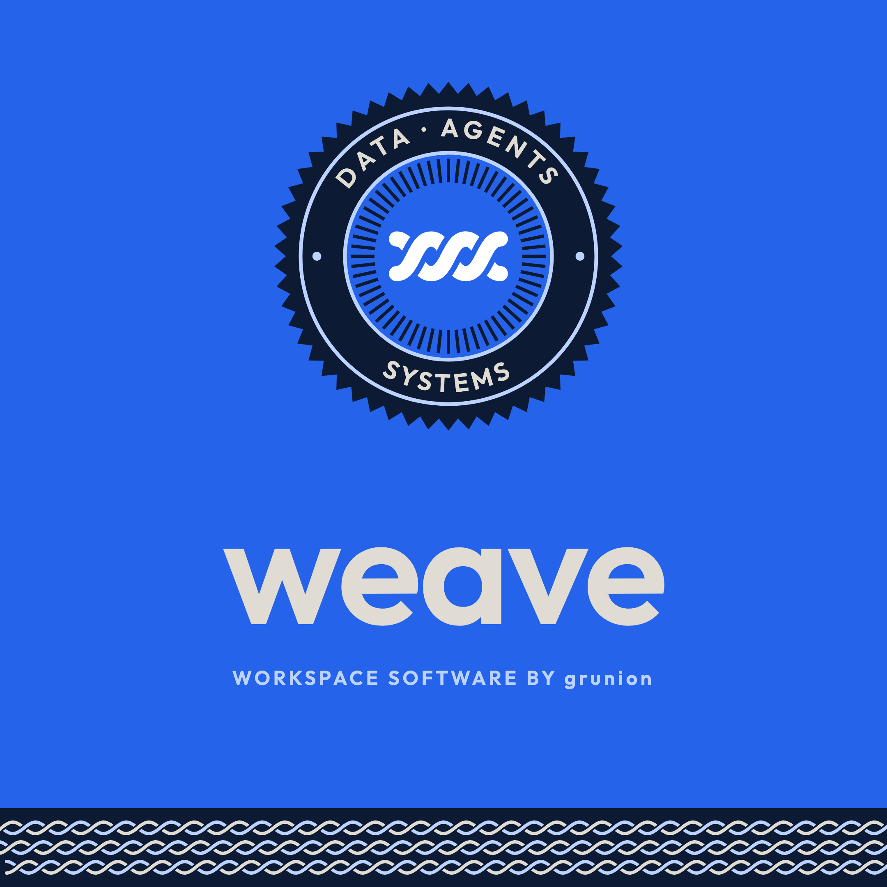
Axis: colour. Light contour field, white pill, ink wordmark.
Axis: colour. Ice contours on blue, ink seal, cream wordmark.
Axis: field. The M1c relief map behind the X6 layout.
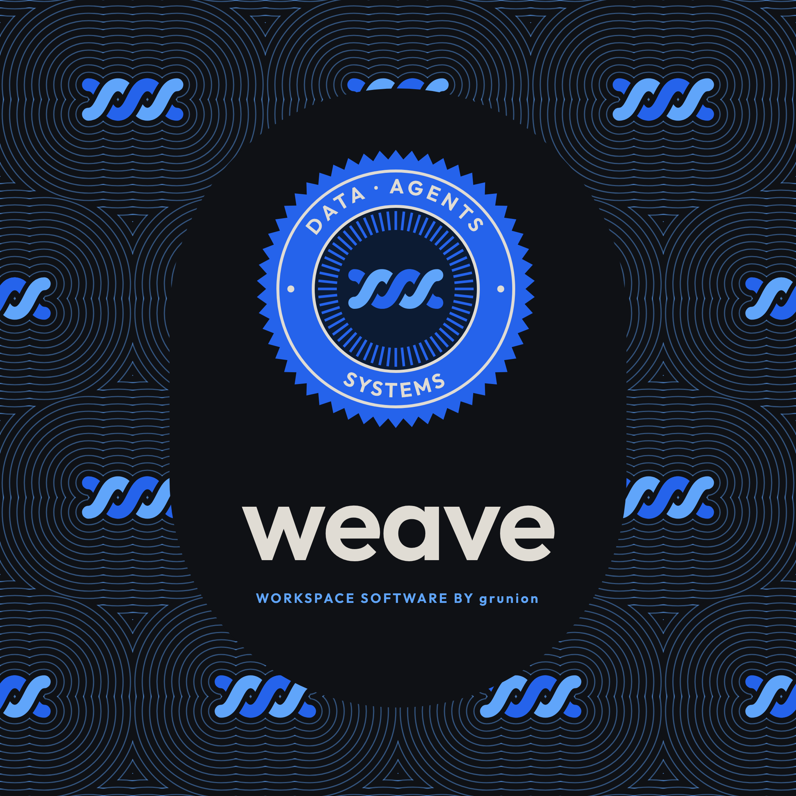
Axis: format. 1080 square post; seal over wordmark in a tall pill.
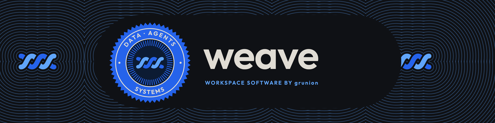
Axis: format. 1584 × 396 profile header over the M1f row field.
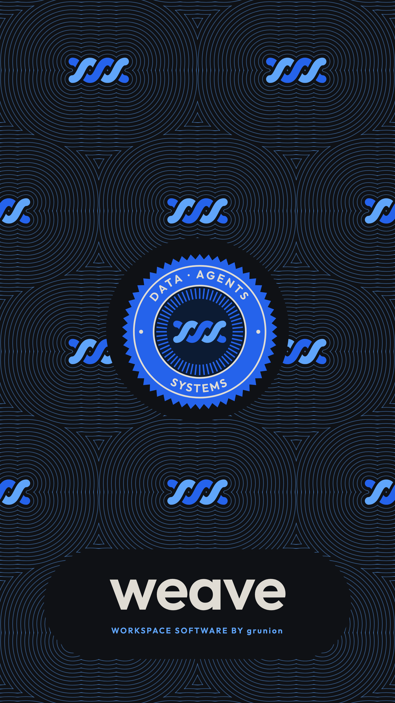
Axis: field. X7 with the M1 contour field in place of the woven rings.
Contour fields and endless rope at 1200 × 800 for backgrounds, section breaks and all-over print.
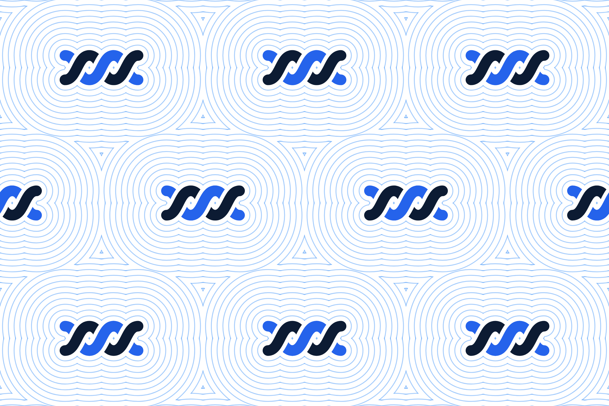
Radiate contours from a half-drop grid of marks; the rings meet between marks and close into cells.
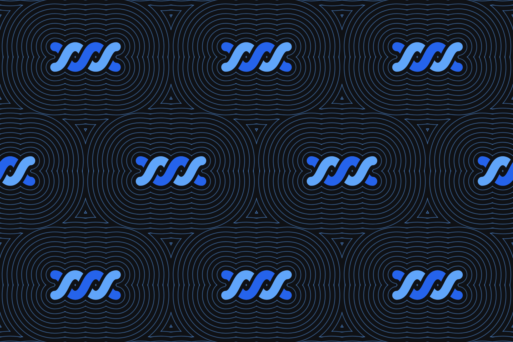
Radiate contours from a half-drop grid of marks; the rings meet between marks and close into cells.
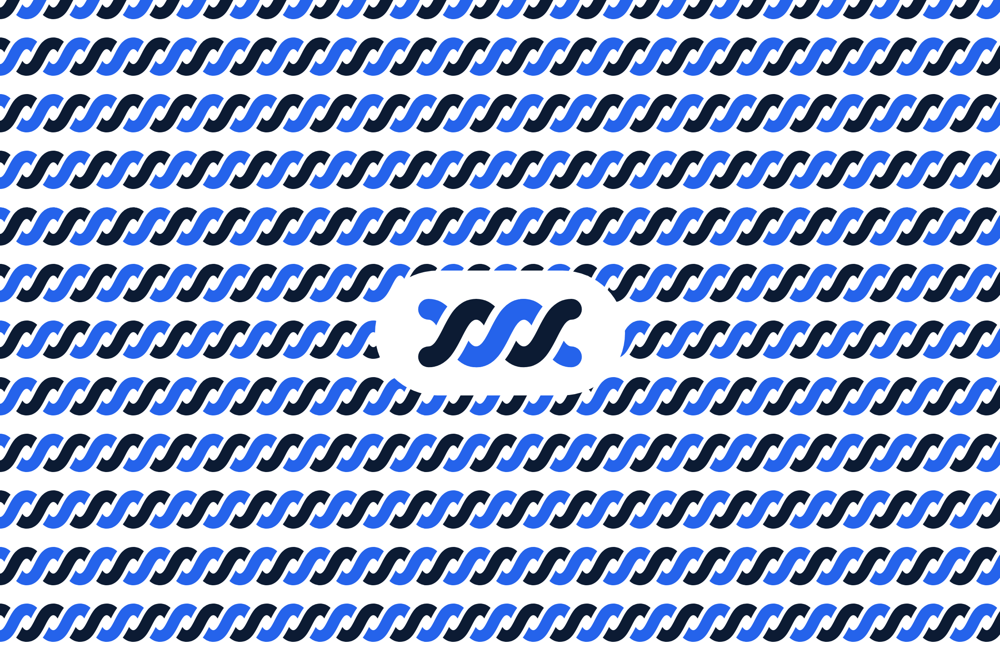
The mark’s own strand curve run edge to edge, row on row, every crossing cut over and under as the mark cuts it.
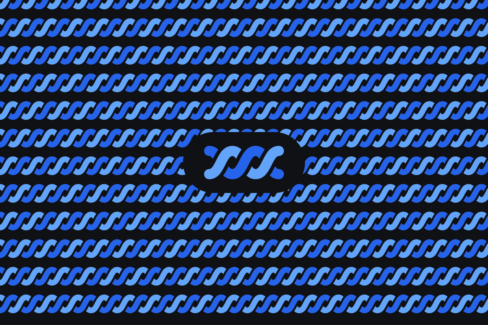
The mark’s own strand curve run edge to edge, row on row, every crossing cut over and under as the mark cuts it.
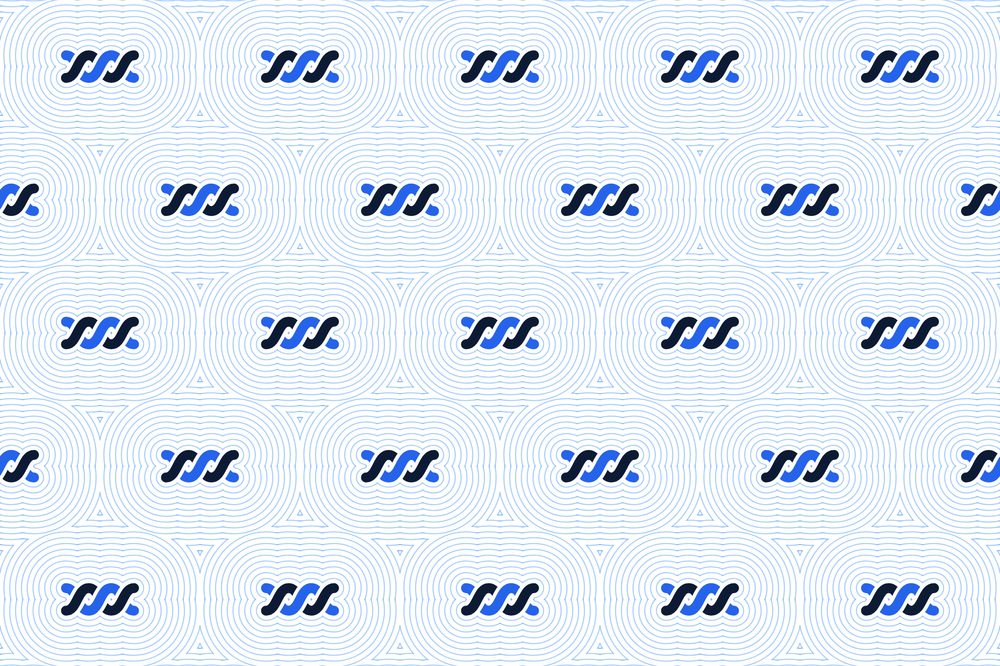
Axis: density. Five columns of small marks; the contours turn into a fine texture.
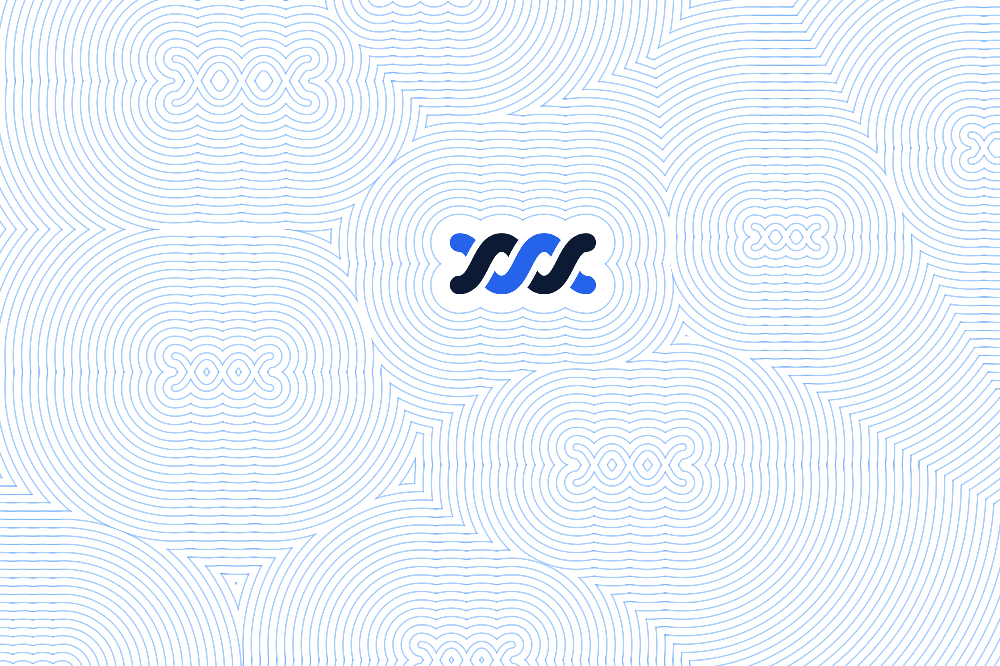
Axis: what shows. The same relief map with only the largest mark drawn; the rest are rope-shaped peaks in the lines.
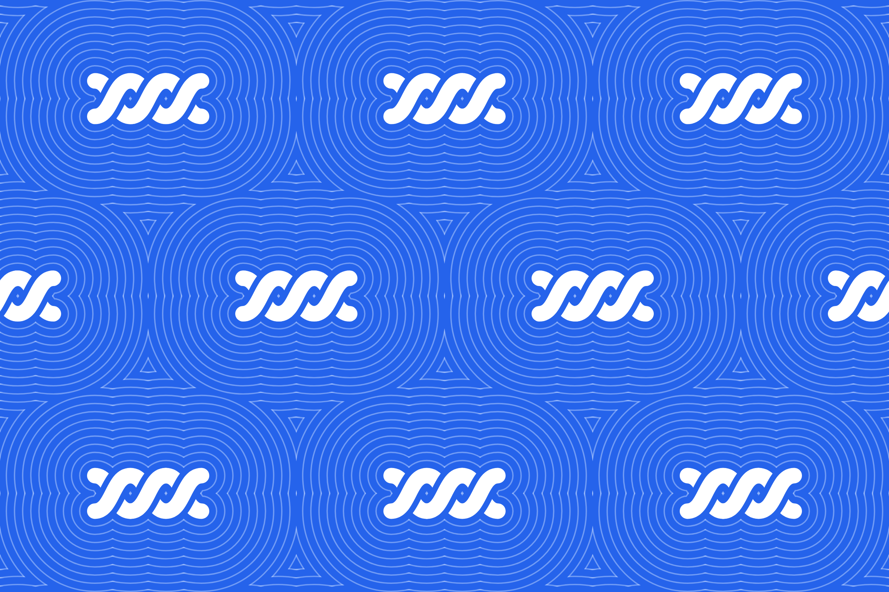
Axis: colour. The M1 grid on a blue field with ice lines and the white mark.
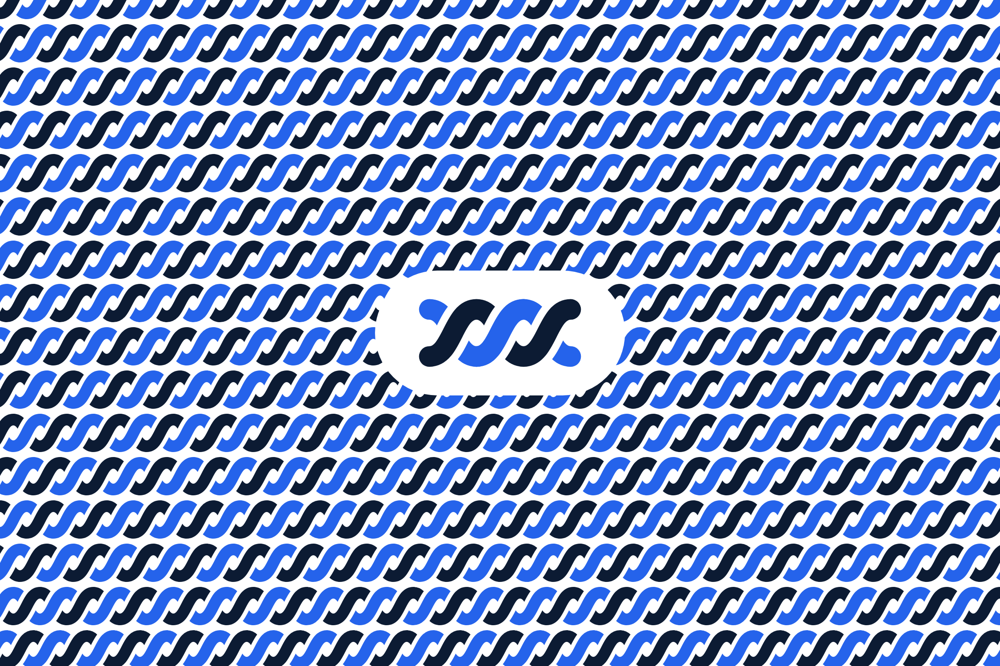
Axis: offset. Each row slides two units further, so the crossings run on a diagonal, as in twill cloth.
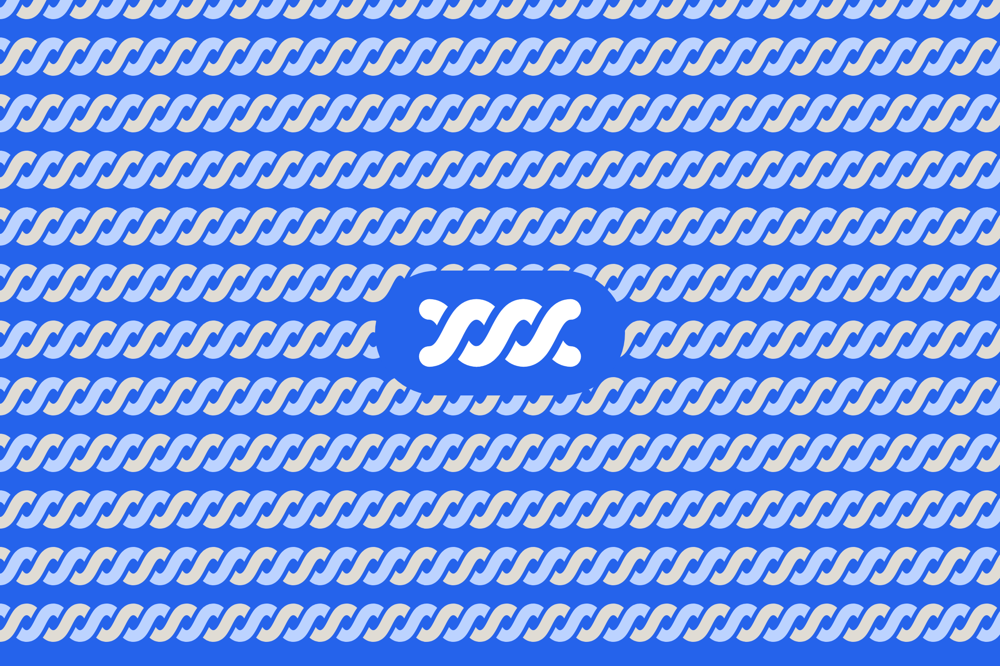
Axis: colour. M2 in cream and ice on blue, with the white mark.
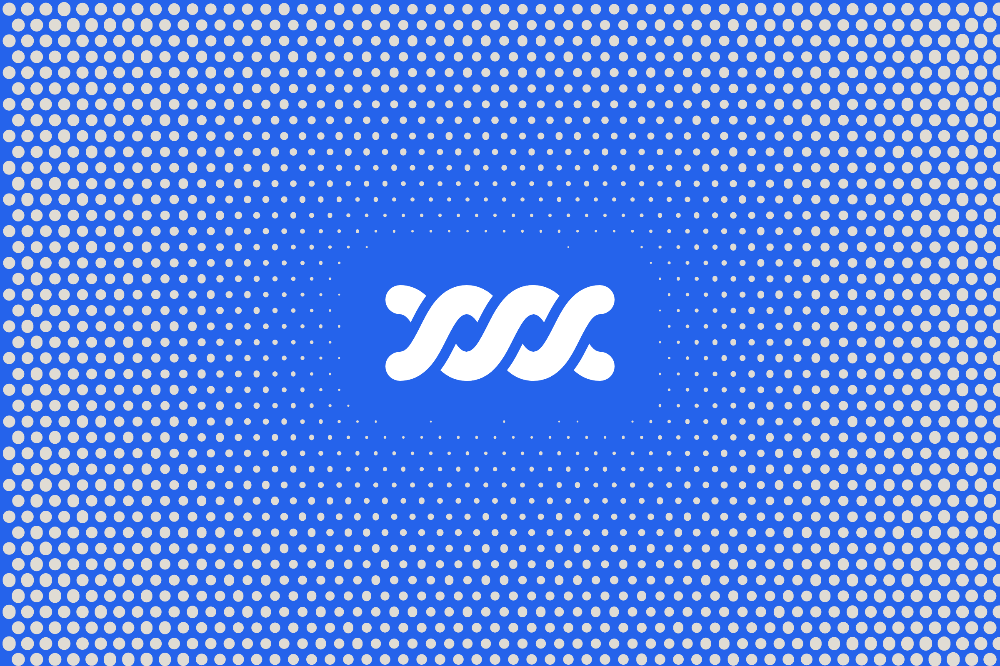
Axis: direction. Dots grow toward the edges instead of the mark; cream on brand blue.
The product and engineering starter category icon.
Strand pairs by ground, and the surfaces behind them. The badge ring reads DATA · AGENTS over SYSTEMS.
Blue with ink on light
#2563eb · #0c1b33Blue with sky on dark
#2563eb · #60a5faCream with ice on brand blue
#e0dcd4 · #bcd3ff#2563eb#60a5fa#0c1b33#e0dcd4#bcd3ff#eceff3#ffffff#e2e6ec#d9dee6#0f1115#181b21#222731#2a2f38../README.md: blue with ink on light, blue with sky on dark, cream with ice on brand blue.manifest.json. A badge on the wrong ground loses its ring.../README.md.SVGs, the manifest and this page come from one script; PNGs render through Chromium with Outfit loaded.
node brand/kit/build-kit.mjs && node brand/kit/render-kit-png.mjs npm test -- --targeted test/brand-kit.test.mjs